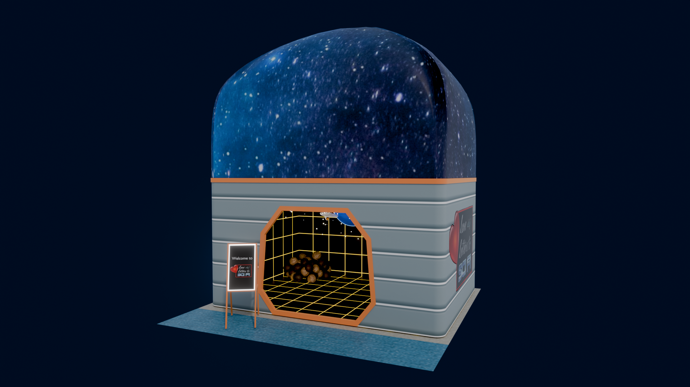
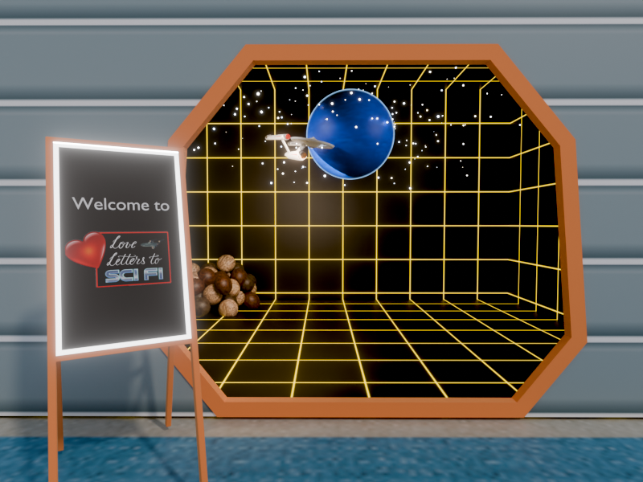
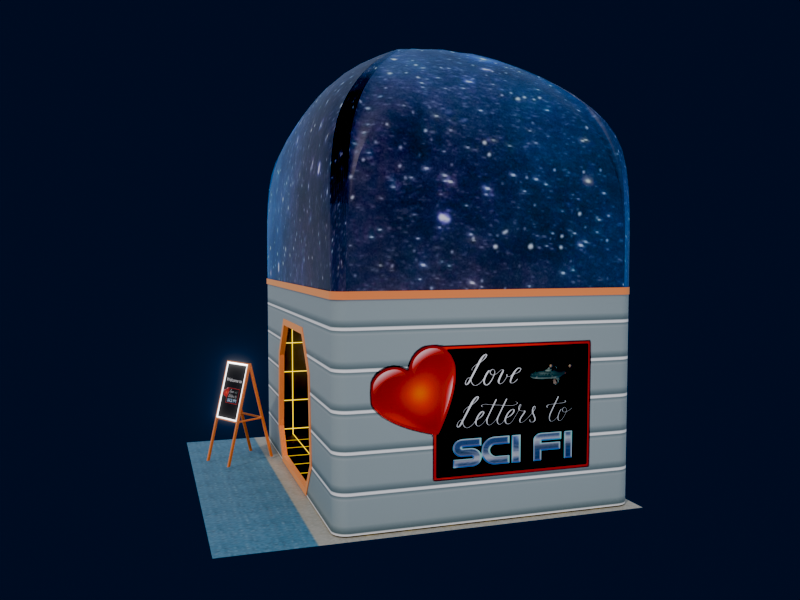
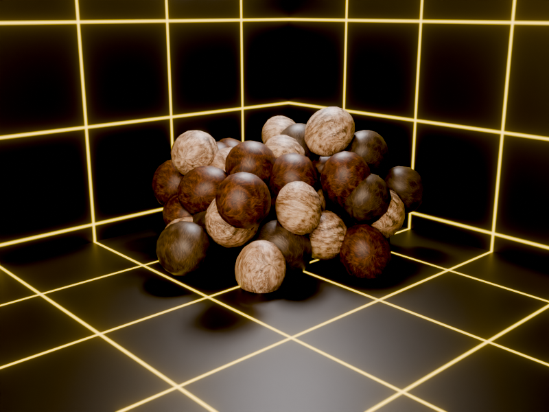

PJKT Fest Booth
2026

An event booth for the "Love Letters to Sci-Fi" community at PJKT Fest, a VRChat festival hosted by Projekt: Community. The brief was to make the interior feel like the Star Trek holodeck; the exterior takes its cues from the corridors of the Enterprise-D, topped with a galaxy-inspired dome for presence on the festival floor.
The defining challenge was the technical spec: 4 meshes, 4 material slots, and 50,000 triangles. Each element gets one material: the booth structure, the tribbles, and the Enterprise. Textures are Quest-compatible, limiting each PBR layer to a 1024 × 1024 PNG, with albedo, metallic/smoothness, normal, and emission all authored manually. Fitting the booth structure's UVs into that budget meant careful unwrapping and deliberate decisions about where lower resolution would not show. The booth logo is original lettering designed in Procreate for the community's visual identity.


